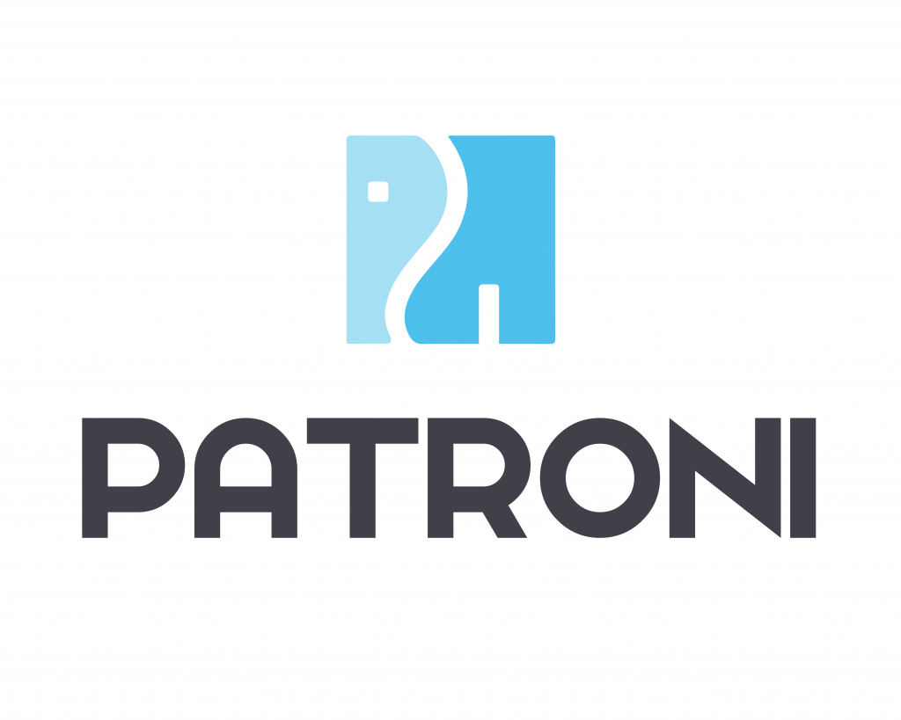

Ansible

|
Plateforme |
Automatisation |
Redhat Ansible |
GPL-3.0-only |
Infrastructure |
- |
OpenTofu, Terraform |
Python, JavaScript, Shell, Jinja, Dockerfile |
AOE Tech Radar

|
Plateforme |
Tech Radar |
AOE PEople |
Apache-2.0 |
Développement |
- |
|
JavaScript, CSS |
AppFlowy

|
Prise de notes |
Application de prise de notes et de présentation des données |
AppFlowy |
AGPL 3
| Poste de travail |
- |
Notion |
Rust |
Audacity

|
Audio |
Éditeur audio et outil d'enregistrement |
Communauté Audacity |
GPL-2.0-or-later |
Audio / Musique |
- |
Adobe Audition, Ocenaudio |
C++ |
|
Cyberduck
|
Transfert de fichiers |
Client FTP et SFTP pour MAC OS X |
David Kocher et Yves Langisch |
GPL |
Poste de travail |
- |
FileZilla, WinSCP |
Java |
Cypress

|
Tests automatisés |
Outil de tests automatisés d'applications Web |
Cypress |
MIT |
Développement |
- |
Selenium, SoapUI, TestProject |
Java |
DBeaver

|
Gestion de bases de données |
Outil universel de gestion de bases de données et client SQL |
DBeaver |
Apache-2.0 |
Développement |
- |
pgAdmin |
Java |
Decidim

|
Plateforme |
Plateforme numérique pour la participation citoyenne |
Decidim Free Software Association |
AGPL-3.0-only
|
participer.ge.ch |
Contributions au travers de notre partenaire de développement |
Konveio, CitizenLab |
Ruby |
Django

|
Framework Web |
Framework MVC pour développement d'applications web sur mesure |
Communauté
Django |
BSD-3-Clause
|
Développement |
- |
Laravel, Symfony, Ruby on Rails... |
Python |
draw.io

|
Logiciel |
Création de diagrammes |
JGraph Ltd & communauté |
Apache-2.0 |
Productivité |
- |
Lucidchart, Microsoft Visio |
JavaScript |
Drupal

|
Gestion de contenu (CMS) |
Logiciel de création de sites Web |
Drupal Association |
GPL-2.0-or-later
|
Développement |
Drupal State of Geneva
|
Wordpress, Joomla |
PHP |
Eclipse

|
Environnement de développement |
Outil de développement pour les logiciels en Java, JavaScript, Python, etc. |
Eclipse Foundation |
EPL-2.0 |
Développement |
- |
IntelliJ, VSCode, NetBeans |
Java, C |
etcd

|
Stockage clé-valeur distribué |
Stockage fiable et distribué pour les données critiques d'un système distribué |
etcd |
Apache-2.0 |
Infrastructure |
- |
Consul |
Go |
FileZilla

|
Logiciel |
Client FTP de transfert de fichiers |
Communauté FileZilla |
GPL-2.0-or-later |
Réseau |
- |
WinSCP, Cyberduck |
C++ |
FreeMind

|
Logiciel |
Carte mentale (mind mapping) |
Communauté FreeMind
|
GPL-2.0 |
Productivité |
- |
XMind, MindMeister |
Java |
GanttProject

|
Gestion de projet |
Outil de gestion de projets |
Bard Software GanttProject |
GPL-3.0-only |
Moyens de développement |
- |
VI, GVIM, Emacs... |
C, C++, Python, HTML |
|
GIMP
|
Traitement d'images |
Outil de manipulation et de retouche d'images |
Communauté GIMP |
GPL-3.0-or-later |
Graphisme |
- |
Adobe Photoshop, Krita |
C, C++, Python |
Git pour Windows

|
Gestion de versions |
Logiciel de gestion de versions décentralisé |
Git pour Windows |
GPL-2.0-only |
Métier |
- |
Microsoft Project |
Java, Kotlin, CSS... |
GoCD

|
Automatisation |
Serveur d'automatisation pour la production continue |
ThoughtWorks |
Apache-2.0 |
Intégration |
- |
Jenkins X, ArgoCD |
Java, TypeScript |
Grafana

|
Surveillance |
Plateforme de représentation graphique de données statistiques |
Grafana Labs |
Apache-2.0 |
Intégration |
- |
|
Go, TypeScript |
Hazelcast

|
Cache |
Outil de traitement rapide de données, avec base de données embarquée et traitements en
temps réel |
Hazelcast |
Apache-2.0 |
Développement |
- |
Redis, Memcached |
Java |
|
Inkscape
|
Logiciel |
Graphisme vectoriel |
Communauté Inkscape |
GPL-3.0-or-later |
Graphisme |
- |
Adobe Illustrator, CorelDRAW |
C++, Python |
IntelliJ

|
Environnement de développement |
Outil de développement pour les logiciels en Java |
JetBrains |
Apache-2.0 |
Développement |
- |
Eclipse, VSCode, NetBeans |
Java |
JMeter

|
Tests de performance |
Logiciel permettant d'effectuer des tests de performance d'applications et de
serveurs selon différents protocoles ainsi que des tests fonctionnels |
Apache Software Foundation |
Apache-2.0 |
Infrastructure |
- |
Gatling, K6 |
Groovy, Java |
|
KeePass
|
Sécurité |
Gestionnaire de mots de passe |
Dominik Reichl |
GPL-2.0-or-later |
Sécurité |
- |
1Password, LastPass |
C# |
Kubernetes

|
Automatisation |
Plate-forme d'automatisation d'applications conteneurisées |
Google
et
Cloud Native Computing Foundation
|
Apache-2.0 |
Infrastructure |
- |
Docker, Rancher |
Go |
LibreOffice

|
Suite bureautique |
Traitement de texte, tableur, présentations |
The Document
Foundation |
MPL-2.0 |
Productivité |
- |
Microsoft Office, Google Docs |
C++, Java |
LimeSurvey

|
Sondages |
Logiciel d'enquêtes statistiques, de sondages et de création de formulaires en ligne |
Carsten Schmitz, Denis Chenu |
GPL |
Développement |
- |
SurveyMonkey |
PHP |
Lucene

|
Moteur de recherche plein texte |
Bibliothèque fournissant une API permettant d'indexer des textes et d'effectuer des
recherches performantes en plein texte. |
Lucene |
Apache-2.0 |
Développement |
- |
- |
Java |
|
Mantis Bug Tracker
|
Suivi d'anomalies |
Outil de suivi d'anomalies |
Mantis Bug Tracker |
GPLv3 |
Développement |
- |
- |
PHP |
MariaDB

|
Base de données |
Base de données relationnelle |
MariaDB Foundation |
GPL-2.0-only |
Bases de données |
- |
PostgreSQL, Oracle |
C, C++, Perl |
Material Design

|
Conception d'IHM Web |
Système de conception d'interfaces graphiques |
Google |
Apache-2.0 et autres
|
Développement |
Exemple de contribution |
Vuetify, Fluent Design |
HTML, CSS, Sass, JavaScript, Java, Swift... |
Maven

| Construction d'applications |
Gestion et automatisation de projets en Java |
Apache
Software Foundation |
Apache-2.0 |
Développement |
Nos contributions sur Maven Central |
Ant, Gradle |
Java |
MongoDB

|
Base de données |
Système de gestion de base de données sous forme de documents |
Kubeshop |
Server side,
Apache-2.0,
Creative Commons
BY-NC-SA-3.0
|
Développement |
- |
SolR, Elasticsearch, Cassandra |
C, C++, JavaScript, Python |
Monokle

|
Conteneurisation |
Logiciel de gestion des configurations Kubernetes |
Kubeshop |
MIT |
Intégration |
- |
|
Perl, C |
Nagios

|
Surveillance |
Logiciel de surveillance de logiciels et du réseau |
Nagios |
GPL-2.0-only |
Intégration |
- |
Seabird, Kubermetic |
TypeScript |
NiFi

|
Automatisation |
Logiciel de gestion de flux de données |
Mark Payne et David Handermann |
GPL-2.0-only |
Développement |
- |
Apache Kafka, Apache Flink |
TypeScript |
Notepad++

|
Editeur de texte |
Editeur de texte, ou de code source utilisé par les développeurs |
Notepad++ |
GPL-3.0-only
|
Moyens de développement |
- |
VI, GVIM, Emacs... |
C, C++, Python, HTML |
OpenJDK

|
Langage de programmation |
Compilateur et machine d'exécution pour le langage de programmation Java |
Oracle principalement |
GPL-2.0-only |
Intégration |
- |
.NET, PHP, node |
C, C++, Java |
|
Patroni

|
HaPostgreSQL |
Template pour la haute disponibilité de PostgreSQL avec etcd, Consul, ZooKeeper ou
Kubernetes |
Patroni |
MIT |
Administration |
- |
pg_auto_failover |
Python |
|
PDFCreator
|
Changement de format de fichiers |
Création et conversion de PDF |
pdfforge GmbH |
AGPL-3.0-or-later |
Productivité |
- |
Adobe Acrobat, Foxit Reader |
C# |
PDFsam Basic

|
Changement de format de fichiers |
Édition et manipulation de fichiers PDF |
Andrea Vacondio |
MPL-2.0 |
Productivité |
- |
Adobe Acrobat, PDF-XChange |
Java |
Podman Desktop

|
Conteneurisation |
Outil de gestion d'images et de conteneurs Docker |
Cloud Native Computing Foundation |
Apache-2.0 |
Développement |
- |
Docker Desktop |
TypeScript |
PostgreSQL

|
Base de données |
Base de données relationnelle |
PostgreSQL Global
Development Group |
PostgreSQL |
Bases de données |
- |
Oracle, MariaDB |
C |
|
PowerDNS
|
DNS |
Serveur DNS |
Communauté
PowerDNS |
GPL-2.0 |
Réseau |
- |
BIND, NSD |
C++ |
Prometheus

|
Surveillance |
Outil de surveillance d'applications et d'alerte |
Cloud Native Computing Foundation |
Apache-2.0 |
Infrastructure |
- |
|
Go |
Python

|
Langage de programmation |
Langage de programmation interprété, multiparadigme et multiplateformes |
Python Software Foundation
|
Python 2,
Python
3.4.3
|
Développement |
- |
|
Python |
QGIS

|
Information géographique |
Système d'information géographique |
Communauté QGIS |
GPL-2.0-only |
Métier |
Pull request 60459
|
ArcGIS, ESRI |
C++, Qt, Python |
RabbitMQ

|
Messagerie |
Agent d'échanges de messages |
VMware |
Apache-2.0
et
MPL-2.0
|
Moyens de développement, équipes métier |
- |
REST, Apache ActiveMQ, IBM MQ |
Erlang |
Red Hat Enterprise Linux

|
OS |
Distribution Linux commerciale pour entreprise |
Communauté RHEL |
Propriétaire / Red Hat Subscription |
Système |
- |
CentOS, Ubuntu Server |
C |
Robot Framework

|
Tests automatisés |
Framework de test automatique pour concevoir et exécuter des tests de validation |
Robot Framework
Foundation |
Apache-2.0 |
Développement, Infrastructure |
- |
Cypress, Selenium, Playwright |
RobotFramework, Python |
|
Scribus
|
Publication |
Publication assistée par ordinateur (PAO) |
Communauté
Scribus |
GPL-2.0-or-later |
Graphisme |
- |
Adobe InDesign, QuarkXPress |
C++ |
ShareX

|
Partage |
Capture et partage d’écran |
Communauté ShareX
|
GPL-3.0-or-later |
Utilitaires |
- |
Greenshot, Lightshot |
C# |
SoapUI

|
Tests |
Outil de tests de services Web |
SmartBear |
EUPL |
Développement |
- |
|
Java |
SonarQube

|
SAST |
Analyse statique de code source |
SonarSource |
LGPL-3.0-only
|
Moyens de développement |
- |
Checkmarx |
Java |
Spring Boot

|
Framework Java |
Cadriciel d'applications autonomes Java |
VMware |
Apache-2.0 |
Développement |
- |
Quarkus, NodeJS |
Java |
|
SVGConverter
|
Changement de format de fichiers |
Logiciel de conversion d'images raster (PNG, JPEG...) en images vectorielles (SVG) |
Alexandre Podlewski |
MIT |
Poste de travail |
- |
Inkscape, GIMP |
Swift |
Tomcat

|
Serveur d'applications |
Serveur applicatif pour applications Web en Java |
Apache Software Foundation |
Apache-2.0 |
Intégration |
- |
JBoss, Spring Boot |
Java |
UAA

|
Gestion des autorisations |
Serveur d'autorisations |
Cloud Foundry |
Apache-2.0 |
Moyens de développement, équipes métier |
- |
|
Java |
Upscayl

|
Traitement d'image |
Logiciel d'amélioration de la résolution d'images, basé sur de l'IA |
Aaron Liu & Co |
AGPL 3
| Poste de travail |
- |
|
TypeScript |
|
vip-manager
|
Gestion de bases de données |
Outil de gestion des VIP pour PostgreSQL |
PostgreSQL Community
|
MIT |
Administration |
- |
- |
Go |
VLC

|
Lecteur de média |
Lecteur multimédia video, audio... |
VideoLAN |
GPL-2.0-only,
LGPL-2.1-or-later
et autres open source
|
Poste de travail |
- |
|
C, C++, Obj-C, Asm, Rust |
WCAG-EM Report Tool

|
Accessibilité |
Outil d'évaluation de l'accessibilité d'un site Web |
W3C |
W3C
Software |
Cyberdaministration |
Traduction en français
|
- |
Svelte, JavaScript, HTML |
7-Zip

|
Archivage |
Logiciel d'archivage et compression de données |
Igor Pavlov |
LGPL-2.1-or-later |
Toutes |
- |
WinZIP, WinRAR... |
C, C++, Assembleur |